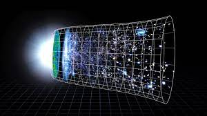

Universe
TThe universe is all of space and time and their contents.It comprises all of existence, any fundamental interaction, physical process and physical constant, and therefore all forms of energy and matter, and the structures they form, from sub-atomic particles to entire galaxies. source: wikipedia
The Big Bang is a physical theory that describes how the universe expanded from an initial state of high density and temperature. It was first proposed in 1927 by Roman Catholic priest and physicist Georges Lemaître. source: wikipedia
Big Bang Visualisation, Gif by tenor